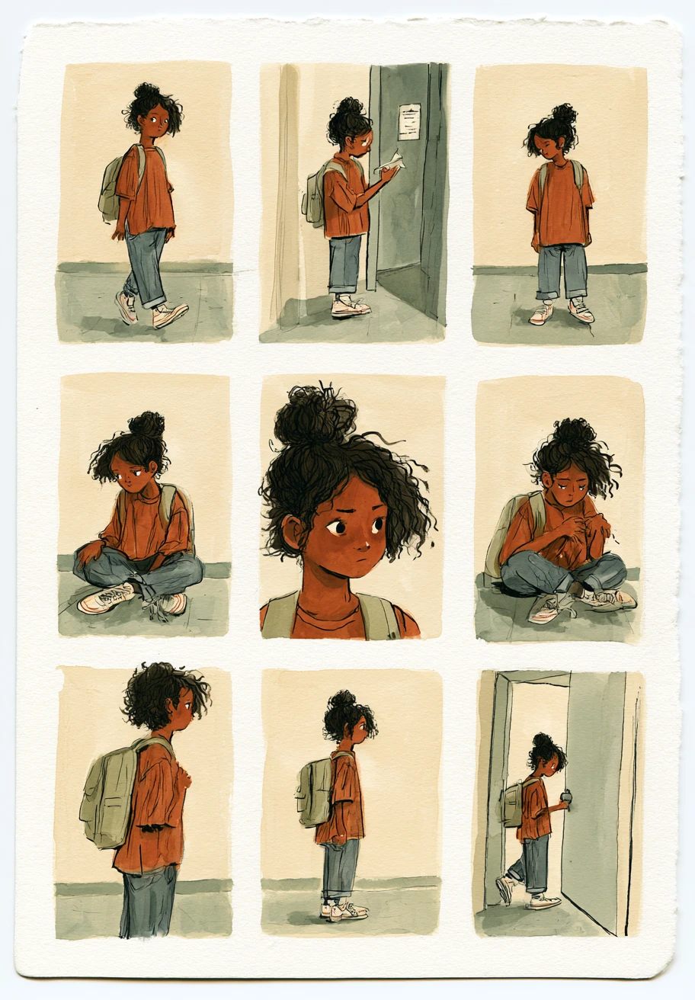

Comics · no words neededIssue 001 · Page 30

Read them across, then down · nine panels, no dialogue
What is happening in each one
1She gets there.
2She reads the note on the door.
3She waits.
4She sits down on the floor.
5She wonders if anyone is coming.
6She makes herself small.
7She turns away.
8She stands back up.
9The door opens.
The waiting page
Nothing
is
happening.
A girl shows up somewhere she did not pick. She reads a note on a door. Then she waits. That is the entire story.
There are no words in any of the nine drawings. You do not need them. You already know what her shoulders mean.
Most of life looks like panels three through eight. Almost nobody draws those. They skip to the door.
Now go back and look at the first one again.
She is not alone in a single frame. She just cannot see it yet. Neither could you, in the part of your life that felt like panel six.
“I am with you, and will keep you wherever you go.” — Genesis 28:15